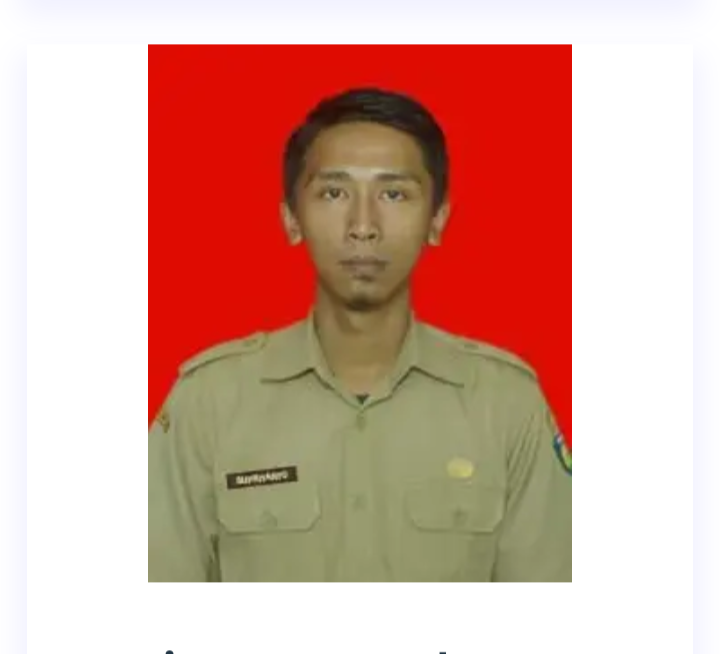
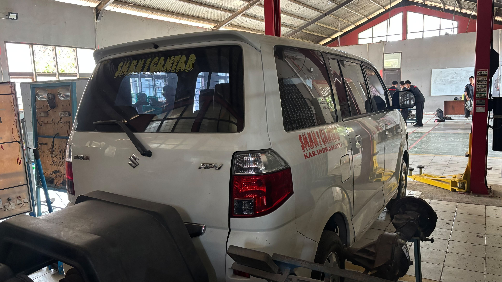
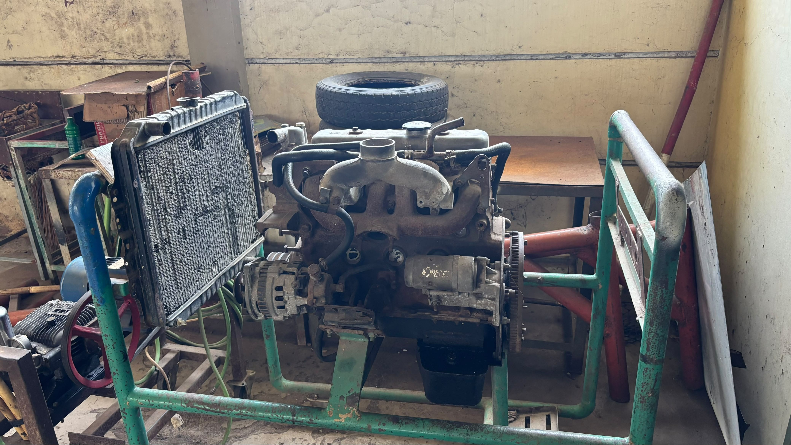
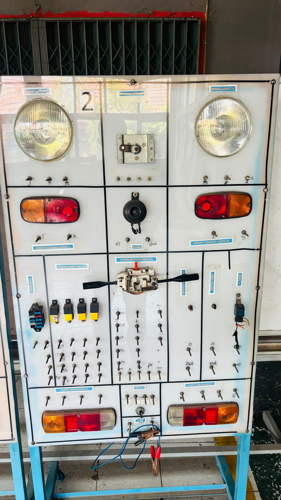
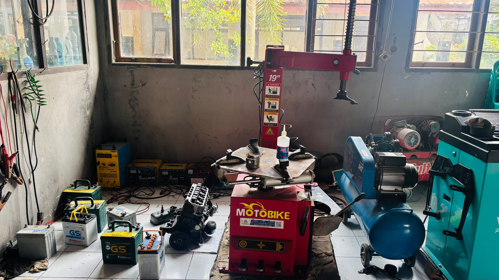

Teknik Kendaraan Ringan (TKR)
Teknik Kendaraan Ringan (TKR) di SMKN 1 Gantar adalah salah satu kompetensi yang mempelajari bidang teknik otomotif dengan fokus khusus pada perawatan, perbaikan dan pemeliharaan mobil serta kendaraan roda empat.
Profil Guru TKR

Triwitono S.T.
Kaprodi TKR

Suprianto A.Rohman, ST.
Guru Produktif TKR
Materi Pembelajaran TKR
- Pemeliharaan mesin kendaraan ringan
- Sistem pemindahan tenaga
- Sasis dan suspensi
- Kelistrikan kendaraan ringan
- Dasar dasar manajemen bengkel
Fasilitas Jurusan TKR

Mobil Untuk praktek

Mesin

Panel kelistrikan
